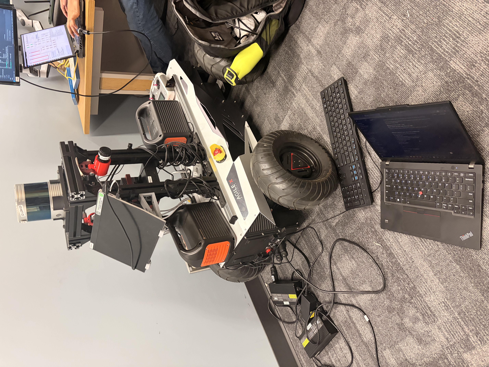
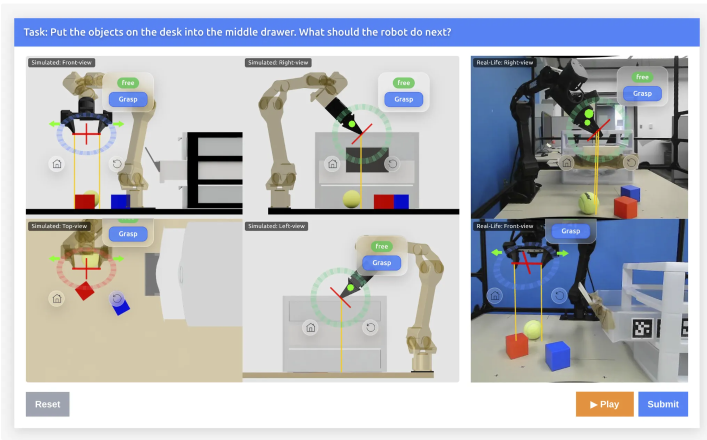
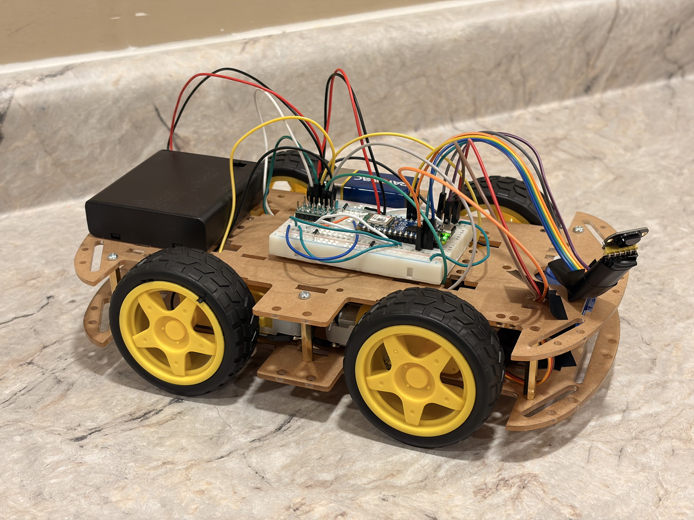
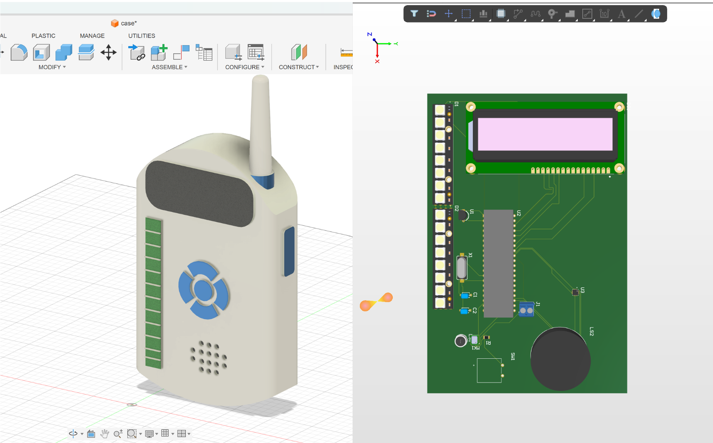

Projects
-

Solar Vehicle Project
As part of my school’s solar vehicle project, I design schematics and pcb’s as well as develop code and test them for both the horn component and battery management system of the vehicle.
This includes everything from the initial schematic in Altium Designer to component selection, microcontroller programming, debugging with oscilloscopes and logic analyzers to hands on tasks such as spot welding battery cells into packs or assembling / soldering pcb’s by hand or with a stencil and reflow oven. -

Research : Autonomous Vehicles over Bandwidth Constrained Networks
Under the Computer Network and AI Research Lab, I research and develop autonomous vehicle and teleoperation systems using multimodal sensor fusion (camera, LiDAR, radar) and ROS2 to support safe operation over long distances and bandwidth constrained networks. I am also Investigating the deployment of autonomous indoor robots using embedded edge computing on a NVIDIA Jetson & Hunter 2.0 robot from AgileX robotics
-

Research : Robotic Manipulation
Under the Human Centered Computing Lab, I am conducting research on robotic manipulation using diffusion based learning to enable robots to adaptively choose among multiple valid actions in uncertain, real world environments
-

Obstacle Avoiding RC Car
As part of a personal project I developed an obstacle avoiding RC car using a servo mounted VL53L1X Time of Flight sensor for obstacle detection / distance measurement, an ESP32 nano for processing along with a DRV8835 carrier to drive the motors. I plan to scale this project by implementing a camera with robot vision algorithms to classify objects and include decision making rather than predefined commands..
-

Baby Monitor
For an Intro to Microcontrollers course, my peers and I developed a baby monitor device centered around two breadboards with a PIC24 microcontroller for signal processing. The device also used HC-05 and HC-06 bluetooth modules for wireless data transfer, an 8 segment NeoPixel LED strip to visualize audio amplitude levels, an LCD for displaying temperature and system status, and integrated microphone and temperature sensors for environmental sensing and monitoring
After the initial project, I scaled the design by creating my first ever custom PCB and CAD enclosure, integrating all components into a compact and manufacturable design. Since then, I’ve continued to refine and develop increasingly complex systems, as reflected in my work on the solar vehicle project and other embedded hardware designs.